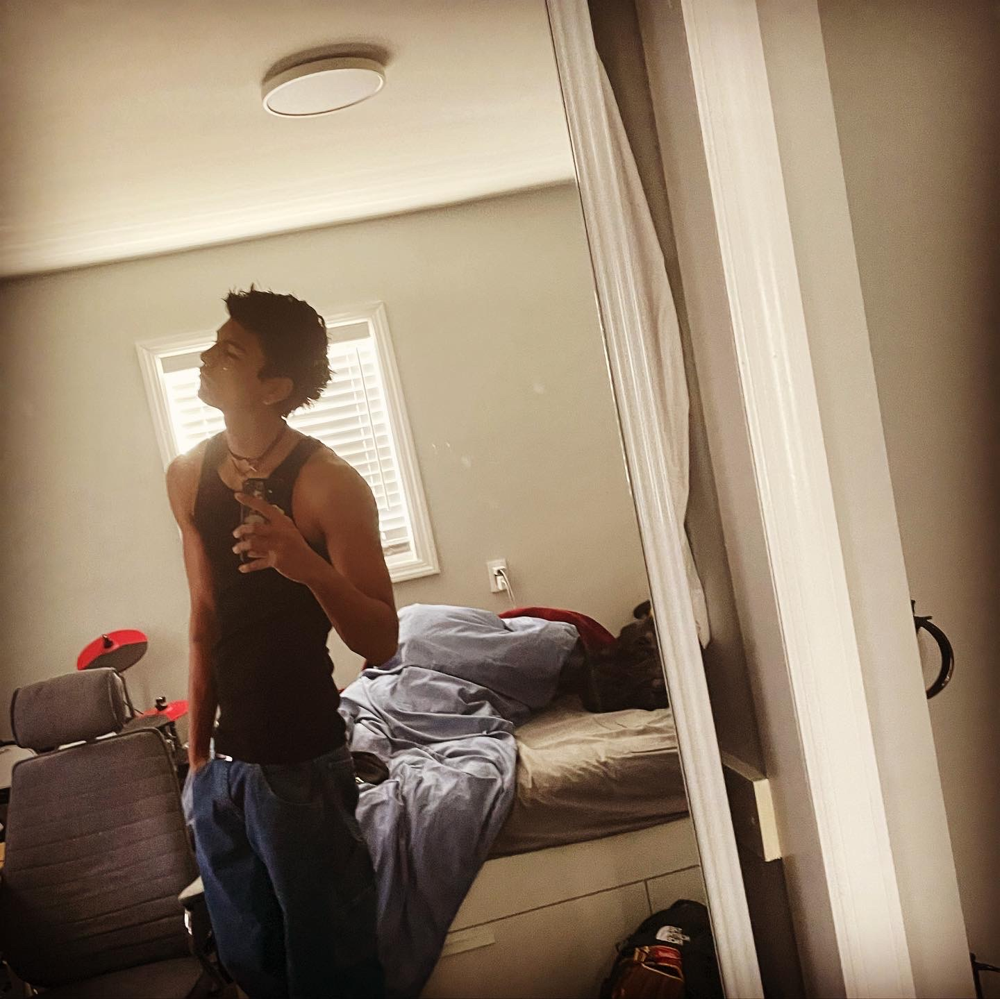

My New York
By Ryan O.
ABOUT ME:
I was born in Chandler, Arizona and raised in New York City. My mom was a single parent for most of her life so I do resepct her heavily for that. Ever since I was a kid, I was always big on music, and learning about the human anatomy. In the 7th grade I picked up playing the drums and have been ever since. Always wished I could join a band, but it does not look like that will work out any time soon. I also applied to Nursing programs and have gotten into many already, hoping to get a nursing degree, then my MD, and possibly a Ph.D. I used to work for Russo's on the Bay, but now I am a model for Claude Management. I love to travel and the warm weather. I also like to stay active, as I try to go to the gym 6 times a week, play baseball, race ATV's, and snowboard. I have a dog and two cats, and was contemplating becoming a veterinarian but, I know helping people is the place for me. Also I would not be able to deal with putting a dog down.
